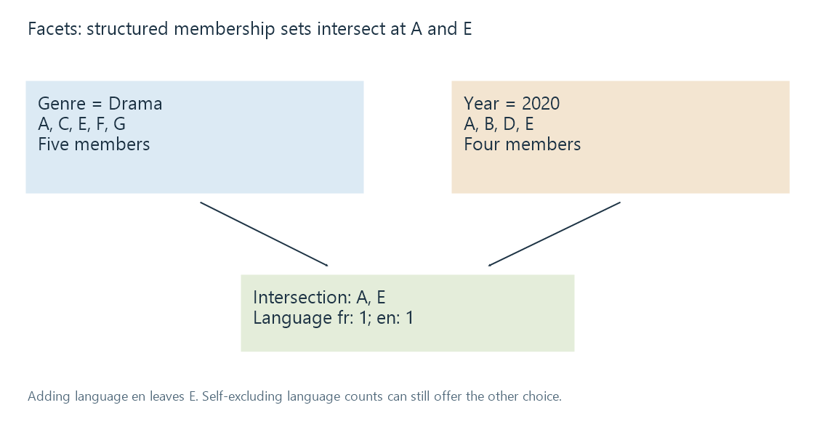

Faceted browsing
Faceted browsing narrows a defined item set through structured field membership, with combination rules and count scope explaining available choices.
A facet filters items using a structured property such as genre, year or language. Its choices and counts refer to a defined item set.
Start with a small explicit dataset
These are original fictional records:
| Item | Genre | Year | Language |
|---|---|---|---|
| A | Drama | 2020 | fr |
| B | Comedy | 2020 | en |
| C | Drama | 2019 | en |
| D | Documentary | 2020 | en |
| E | Drama | 2020 | en |
| F | Drama | 2021 | fr |
| G | Drama | Unknown | en |
A Drama filter selects A, C, E, F, G. A 2020 filter selects A, B, D, E. Applying both with AND leaves A and E.

Adding language en leaves E. The result comes from membership in all selected sets, not a substring search over a rendered description.
AND and OR describe different operations
Within the genre facet, choosing Drama OR Comedy yields A, B, C, E, F, G. Combining that union with year 2020 leaves A, B, E.
A product can use another selection rule. The useful description names which choices are OR alternatives and which facets must all match.
For a multi-valued genre field, one item can belong to several choices. Counting each choice separately can legitimately exceed the number of distinct items.
Counts can describe the current context
After selecting Drama and 2020, the two remaining items have language counts fr: 1, en: 1.
Those differ from the complete dataset's language counts. They answer how many items could match within the current genre/year context.
A self-excluding facet policy calculates a facet's options using the other filters while omitting its own active filter. With language en also active, the current result is E; the language facet can still show fr: 1 and en: 1 because it computes against Drama + 2020.
That is a coherent way to offer alternatives, not proof of a bad count. An all-filters-applied policy would answer another question.
Unknown values need an explicit place
G has no known year. A 2020 constraint does not establish it as a match, and replacing Unknown with an invented year would corrupt the source.
A browse policy can offer an unknown category, omit it from the year choices, or use another documented representation. Its count should retain that scope.
In the Drama set, original year counts are 2019: 1, 2020: 2, 2021: 1, Unknown: 1.
Count the intended entity once
Several files or joined credit rows can describe one library item. Counting those rows as separate movies can inflate a facet.
The selected identity level matters: works, editions and local resources can have different useful totals. Deduplication should preserve that level rather than merely deduplicate equal titles.
For Emby browsing, compare the selected library/eligible items, active filters, combination rules and displayed counts. This model does not prescribe the app's facet algorithm; it supplies the evidence needed to interpret the result.